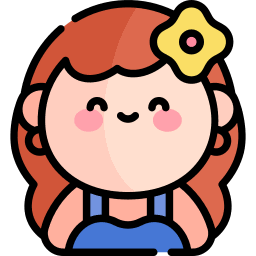

PERSONAL RESUME WEBSITE
Hello, I'm Siti Nurhafidah.
An Information Technology student who is learning web development and programming.
Matric Number: 307979
Contact MeAbout Me
I am an Information Technology student interested in learning how websites and software are developed. I am building my skills through coursework, practice, and small projects.
Education
Information Technology
Universiti Utara Malaysia (UUM)
Skills
Career Objective
To continue developing my technical knowledge and practical skills in Information Technology, especially programming and web development.